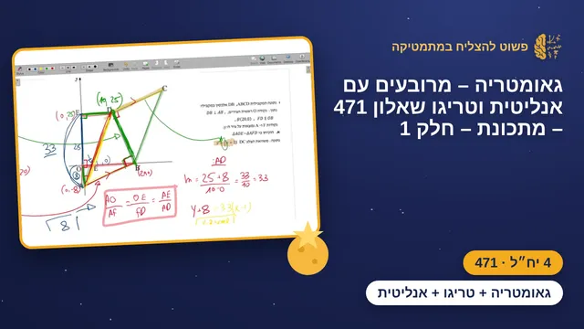
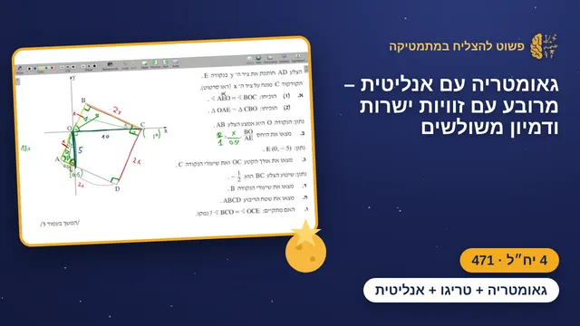
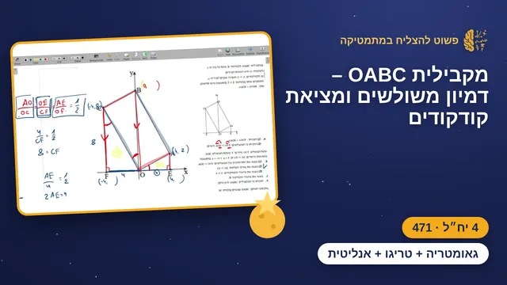
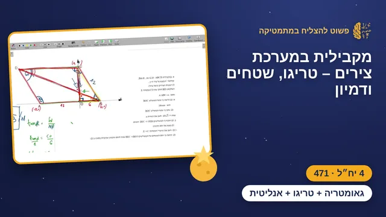
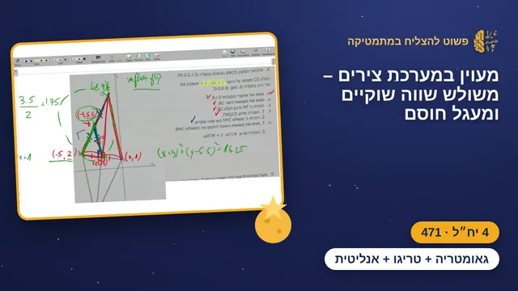
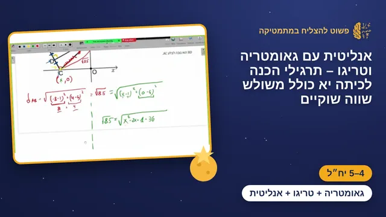
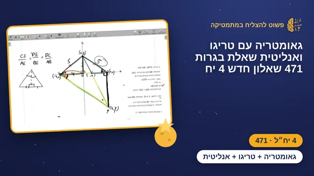
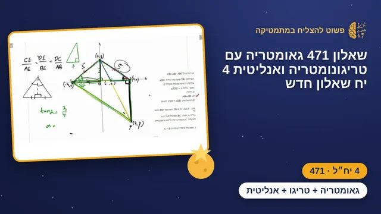
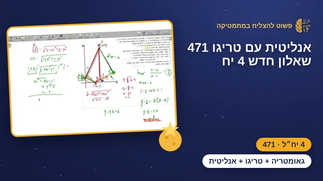
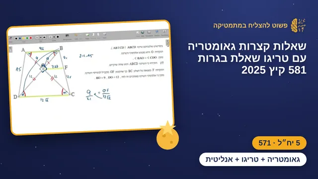

פשוט להצליח במתמטיקה › כל הנושאים › גאומטריה + טריגו + אנליטית
גאומטריה + טריגו + אנליטית – סרטוני הסבר ותרגול
39 סרטוני הסבר ותרגול בנושא גאומטריה + טריגו + אנליטית – לשאלון 471, שאלון 571. כל נושא מוסבר מהקל אל הקשה: קודם הרעיון, אחר כך תרגילים, ובסוף שאלות בסגנון בגרות. הכול בחינם, בשיטת "פשוט להצליח".
רוצים לעקוב אחרי ההתקדמות?נרשמים בחינם, וכל סרטון שראיתם מסומן ✓. ממשיכים מכל מכשיר.
הצטרפות בחינם ←גאומטריה + טריגו + אנליטית – שאלון 471 כל הנושאים של שאלון 471 ←
 טרפז במערכת צירים – אנליטית, גאומטריה וטריגו
טרפז במערכת צירים – אנליטית, גאומטריה וטריגו גאומטריה – מרובעים עם אנליטית וטריגו שאלון 471 – מתכונת – חלק 2
גאומטריה – מרובעים עם אנליטית וטריגו שאלון 471 – מתכונת – חלק 2
גאומטריה – מרובעים עם אנליטית וטריגו שאלון 471 – מתכונת – חלק 1 גאומטריה עם אנליטית – משולשים דומים וישרים מקבילים
גאומטריה עם אנליטית – משולשים דומים וישרים מקבילים
גאומטריה עם אנליטית – מרובע עם זוויות ישרות ודמיון משולשים מקבילית במערכת צירים – קטע אמצעים, דמיון ויחס שטחים
מקבילית במערכת צירים – קטע אמצעים, דמיון ויחס שטחים
מקבילית OABC – דמיון משולשים ומציאת קודקודים
מקבילית במערכת צירים – טריגו, שטחים ודמיון
מעוין במערכת צירים – משולש שווה שוקיים ומעגל חוסם
אנליטית עם גאומטריה וטריגו – תרגילי הכנה לכיתה יא כולל משולש שווה שוקיים אנליטית עם גאומטריה וטריגו – תרגילי הכנה לכיתה יא כולל מרובעים ואיך מוכיחים
אנליטית עם גאומטריה וטריגו – תרגילי הכנה לכיתה יא כולל מרובעים ואיך מוכיחים גאומטריה מרובעים עם טריגו ואנליטית – מתכונת שאלון 471
גאומטריה מרובעים עם טריגו ואנליטית – מתכונת שאלון 471
גאומטריה עם טריגו ואנליטית שאלת בגרות 471 שאלון חדש 4 יח אנליטית עם גאומטריה וטריגו 471 שאלון חדש 4 יח
אנליטית עם גאומטריה וטריגו 471 שאלון חדש 4 יח אנליטית עם טריגו וגאומטריה שאלון 471 4 יח
אנליטית עם טריגו וגאומטריה שאלון 471 4 יח
שאלון 471 גאומטריה עם טריגונומטריה ואנליטית 4 יח שאלון חדש
אנליטית עם טריגו 471 שאלון חדש 4 יח שאלון 471 גאומטריה עם אנליטית וטריגונומטריה – משולש ישר זווית 4 יח
שאלון 471 גאומטריה עם אנליטית וטריגונומטריה – משולש ישר זווית 4 יח שאלה 4 בשאלון 471 גאומטריה עם אנליטית וטריגו – שאלה קשה במיוחד יא 4 יח
שאלה 4 בשאלון 471 גאומטריה עם אנליטית וטריגו – שאלה קשה במיוחד יא 4 יח הסבר על מהות שאלה 4 בשאלון 471 – חיבור גאומטריה עם טריגונומטריה ואנליטית
הסבר על מהות שאלה 4 בשאלון 471 – חיבור גאומטריה עם טריגונומטריה ואנליטית אנליטית עם טריגונומטריה 471 שאלון חדש 4 יח כיתה יא
אנליטית עם טריגונומטריה 471 שאלון חדש 4 יח כיתה יא שאלת בגרות גאומטריה עם טריגו – מקבילית ודמיון משולשים 471 4 יח
שאלת בגרות גאומטריה עם טריגו – מקבילית ודמיון משולשים 471 4 יח שאלון 471 גאומטריה עם טריגו ואנליטית – דלתון וחפיפת משולשים
שאלון 471 גאומטריה עם טריגו ואנליטית – דלתון וחפיפת משולשים שאלון 471 גאומטריה עם טריגו ואנליטית שאלת בגרות – כולל דמיון משולשים
שאלון 471 גאומטריה עם טריגו ואנליטית שאלת בגרות – כולל דמיון משולשים שאלון 471 שאלה 4 – גאומטריה עם אנליטית וטריגו: ריבוע ודמיון משולשים
שאלון 471 שאלה 4 – גאומטריה עם אנליטית וטריגו: ריבוע ודמיון משולשים שאלת בגרות 471 – גאומטריה עם טריגו ואנליטית, שאלה 4
שאלת בגרות 471 – גאומטריה עם טריגו ואנליטית, שאלה 4 471 שאלת גאומטריה עם טריגו ואנליטית כולל קטע אמצעים
471 שאלת גאומטריה עם טריגו ואנליטית כולל קטע אמצעים אנליטית עם גאומטריה וטריגו שאלון חדש 471 – תרגיל מסכם את כל החומר
אנליטית עם גאומטריה וטריגו שאלון חדש 471 – תרגיל מסכם את כל החומר אנליטית עם גאומטריה וטריגו שאלון 471 – שאלת בגרות פתורה מלאה
אנליטית עם גאומטריה וטריגו שאלון 471 – שאלת בגרות פתורה מלאה גאומטריה עם טריגו ואנליטית 471 – רעיון ב-5 דקות 1גאומטריה עם טריגו ואנליטית 471 – רעיון ב-5 דקות 2
גאומטריה עם טריגו ואנליטית 471 – רעיון ב-5 דקות 1גאומטריה עם טריגו ואנליטית 471 – רעיון ב-5 דקות 2 שאלות בגרות 471 אנליטית עם גאומטריה וטריגו – איך לפתור תרגיל 1שאלות בגרות 471 אנליטית עם גאומטריה וטריגו – איך לפתור תרגיל 2גאומטריה אנליטית עם טריגו וגאומטריה אוקלידית שאלת בגרות 471 חורף 2024
שאלות בגרות 471 אנליטית עם גאומטריה וטריגו – איך לפתור תרגיל 1שאלות בגרות 471 אנליטית עם גאומטריה וטריגו – איך לפתור תרגיל 2גאומטריה אנליטית עם טריגו וגאומטריה אוקלידית שאלת בגרות 471 חורף 2024 אנליטית עם גאומטריה וטריגו שאלות בגרות 471 4 יח 1
אנליטית עם גאומטריה וטריגו שאלות בגרות 471 4 יח 1 אנליטית עם גאומטריה וטריגו שאלות בגרות 471 4 יח 2
אנליטית עם גאומטריה וטריגו שאלות בגרות 471 4 יח 2גאומטריה + טריגו + אנליטית – שאלון 571 כל הנושאים של שאלון 571 ←

שאלות קצרות גאומטריה עם טריגו שאלת בגרות 581 קיץ 2025אנליטית עם גאומטריה וטריגו – תרגילי הכנה לכיתה יא כולל משולש שווה שוקייםאנליטית עם גאומטריה וטריגו – תרגילי הכנה לכיתה יא כולל מרובעים ואיך מוכיחיםתרגיל טריגו עם גאומטריה – משפט הסינוסים והקוסינוסים 5 יחתרגיל טיל – טריגו עם גאומטריה, משפט הסינוסים והקוסינוסים 5 יח